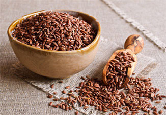
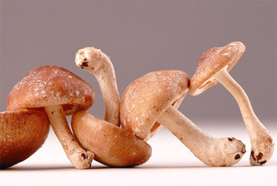
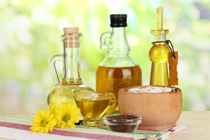
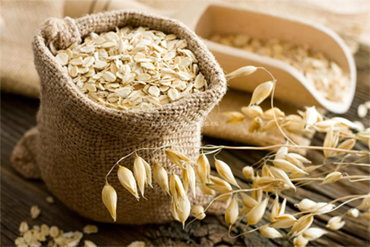
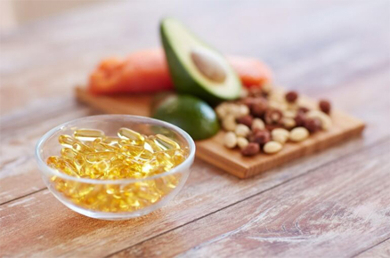

ИДЕАЛЬНАЯ ПИЩЕВАЯ СБАЛАНСИРОВАННОСТЬ
Мы готовим дома и перекусываем в фаст-фудах, покупаем еду на улице и в ресторане, заказываем пиццу с доставкой… и почти никогда не знаем, что же мы едим на самом деле. Сколько Вы сегодня съели жиров, углеводов, белков? Достаточно ли их для Вашего организма, для Вашего образа жизни? А каков состав жиров, которые Вы потребили? Какова в них доля трас-жиров, использовали ли в приготовлении съеденной Вами пищи маргарины? Были ли в Вашем рационе столь необходимые Омега 3 жирные кислоты? Какого качества были углеводы в Вашем рационе? Есть еще 100 вопросов, которые стоит себе задать, перед тем, как съесть очередную порцию традиционной еды.
Обеспечить себя здоровым и сбалансированным традиционным питанием очень и очень сложно.
MaxLife – продукт с контролируемым составом, без трансжиров, без вредного холестерина, со всеми необходимыми аминокислотами, с разумным составом углеводов. Формула MaxLife включает в себя все необходимые человеку питательные вещества, витамины и минералы.

ПРОТЕИН (БЕЛОК) БУРОГО РИСА
Уникальный растительный белок, содержащий все 8 незаменимых аминокислот. Считается гипоаллергенным, замечательно подходит для людей с аллергией на сою, яйца или молоко. Отличный источник белка для приверженцев вегетарианства.

ИЗОМАЛЬТУЛОЗА (МЕДОВЫЙ САХАР)
Один из лучших углеводов сочетающий в себе как высокий уровень усваиваемости, так и снижение рисков, связанных с уровнем инсулина. Изомальтулоза расщепляется в желудочно-кишечном тракте гораздо медленнее свекольного сахара, благодаря чему гликемическая и инсулинемическая реакция на изомальтулозу выражена меньше, а энергия поступает в организм дольше.
подробнее...КРАХМАЛ КАРТОФЕЛЬНЫЙ
Крахмал – это комплекс сложных углеводов, источник энергии для нашего организма. Все углеводы, в конечном счете, расщепляются нашим организмом до сахаров (глюкозы). Именно глюкоза усваивается клетками и превращается в энергию и силу наших мышц. Сложные углеводы расщепляются продолжительное время. Благодаря этому уровень глюкозы в крови поддерживается длительное время на небольшом, но достаточном уровне. Крахмал оказывается отличным источником энергии для длительной деятельности. В нашем рационе картофельный крахмал дает 160 ккал.
подробнее...КРАХМАЛ РИСОВЫЙ
Как и картофельный крахмал, рисовый крахмал – это комплекс сложных углеводов, источник энергии для нашего организма. Сложные углеводы ценны тем, что перевариваются медленно и дают энергию нашему организму постепенно, поддерживают длительную работоспособность. В нашем рационе рисовый крахмал дает 50 ккал.
ТРЕГАЛОЗА (ГРИБНОЙ САХАР)
Уникальный растительный белок, содержащий все 8 незаменимых аминокислот. Считается гипоаллергенным, замечательно подходит для людей с аллергией на сою, яйца или молоко. Отличный источник белка для приверженцев вегетарианства.
подробнее...

КОМПЛЕКС ВИТАМИНОВ И МИНЕРАЛОВ
В MaxLife содрежится полный комлпекс витаминов и минералов. Этот комплекс изготовлен на предрприятиях швейцарской фармацевтической компании
РАПСОВОЕ И ПОДСОЛНЕЧНЫЕ МАСЛА
Жиры – необходимый элемент здорового питания. Отказ от потребления жиров ведет к системным сбоям в работе организма. Сначала резко падает усваиваемость витаминов групп A и E, потом нарушается функционирование межклеточных мембран, падают умственные
подробнее...

ОВЕС (ОВСЯНАЯ МУКА)
Комплексный, проверенный веками продукт питания, предлагающий широкий набор питательных веществ. Белки – до 10% состава, в том числе содержащие незаменимые аминокислоты (лизин, триптофан, аргинин и другие), углеводы, в основном «медленные», крахмал, немного жира и сравнительно много клетчатки – более 10%.
подробнее...

ЛЕЦИТИН
Термин «лецитин» имеет древнегреческие корни и происходит от слова «лекитос», что в переводе означает «яичный желток». И действительно, вряд ли можно представить себе пищевой продукт, в составе которого было бы больше лецитина, чем в желтках. Лецитин почти на две трети состоит из фосфолипидов
подробнее...ЦЕЛЛЮЛОЗА
На первый взгляд, целлюлоза не имеет сколь-нибудь значимой питательной ценности, ведь она совершенно не переваривается организмом человека. Но она – необходимый элемент здорового питания. Целлюлоза – это «пищевое волокно», а пищевые волокна необходимы для обеспечения нормальной жизнедеятельности человека, как здорового, так и больного. Часто нарушения обмена веществ связаны с дефицитом пищевых волокон в рационе.
подробнее...ДОКОЗАГЕКСАЕНОВАЯ КИСЛОТА
Докозагексаеновая кислота (ДГК) — незаменимая полиненасыщенная жирная кислота класса Омега-3, один из главных компонентов комплексных липидов. Большое количество ДГК содержится в рыбных жирах лосося и атлантической сельди, зоопланктоне, морских моллюсках, микроводорослях.
подробнее...
